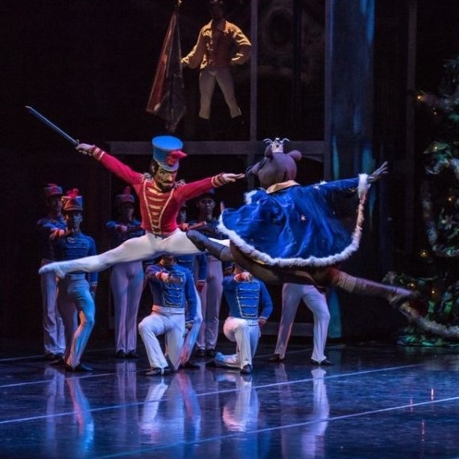

Trama de la Obra
El Cascanueces es un ballet en dos actos que cuenta la historia de Clara, una niña que recibe un cascanueces de madera como regalo de Navidad de su padrino Drosselmeyer. Durante la noche, el cascanueces cobra vida y lidera a un ejército de soldados en una batalla contra los ratones, dirigidos por el malvado Rey de los Ratones. Clara ayuda a derrotarlos, y el cascanueces se transforma en un príncipe. Juntos viajan al Reino de los Dulces, donde celebran una fiesta con danzas de diferentes países. Al final, Clara despierta junto al árbol de Navidad, feliz por su aventura, aunque algunas versiones sugieren que no fue un sueño.

